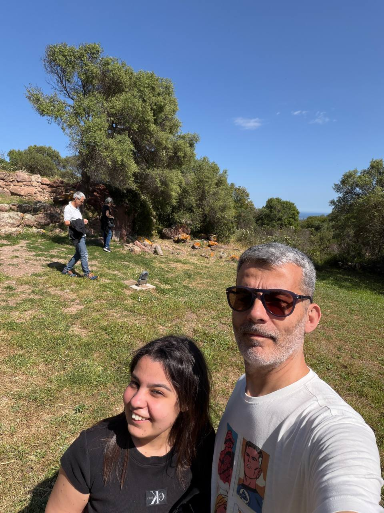
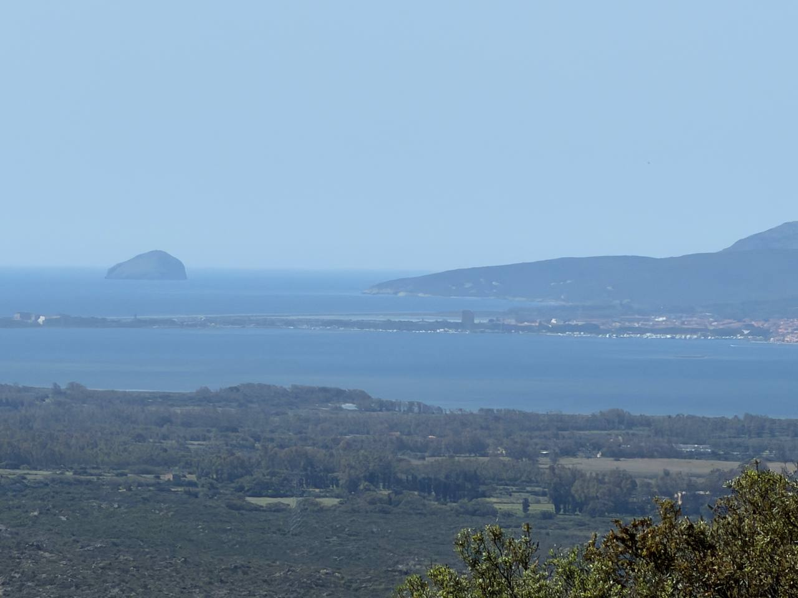
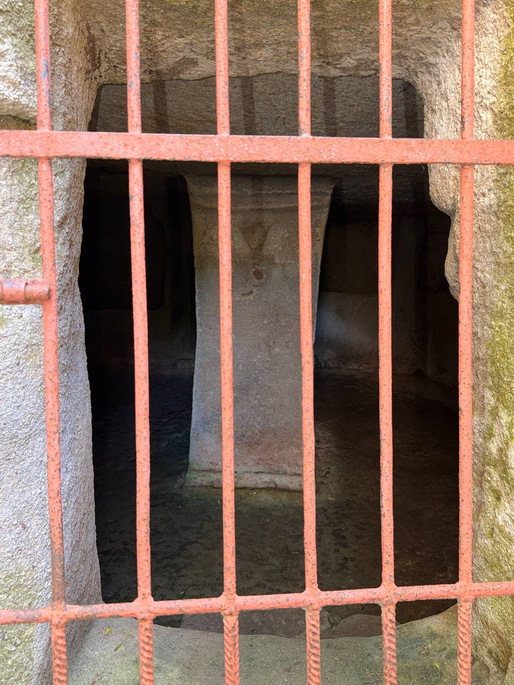
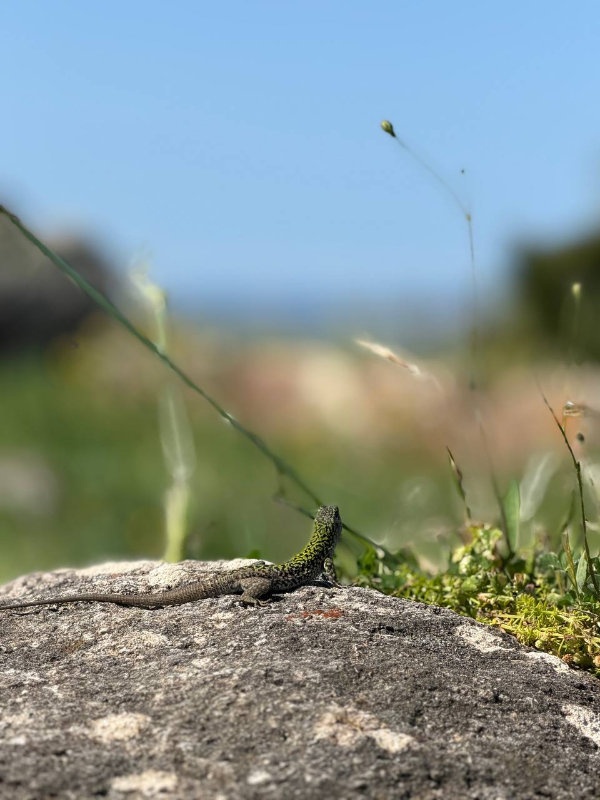
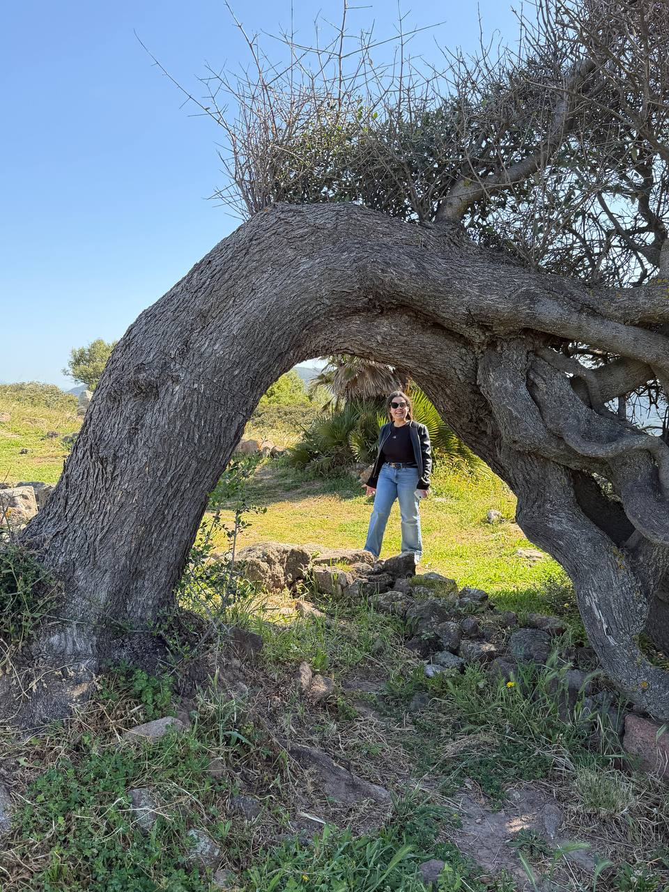
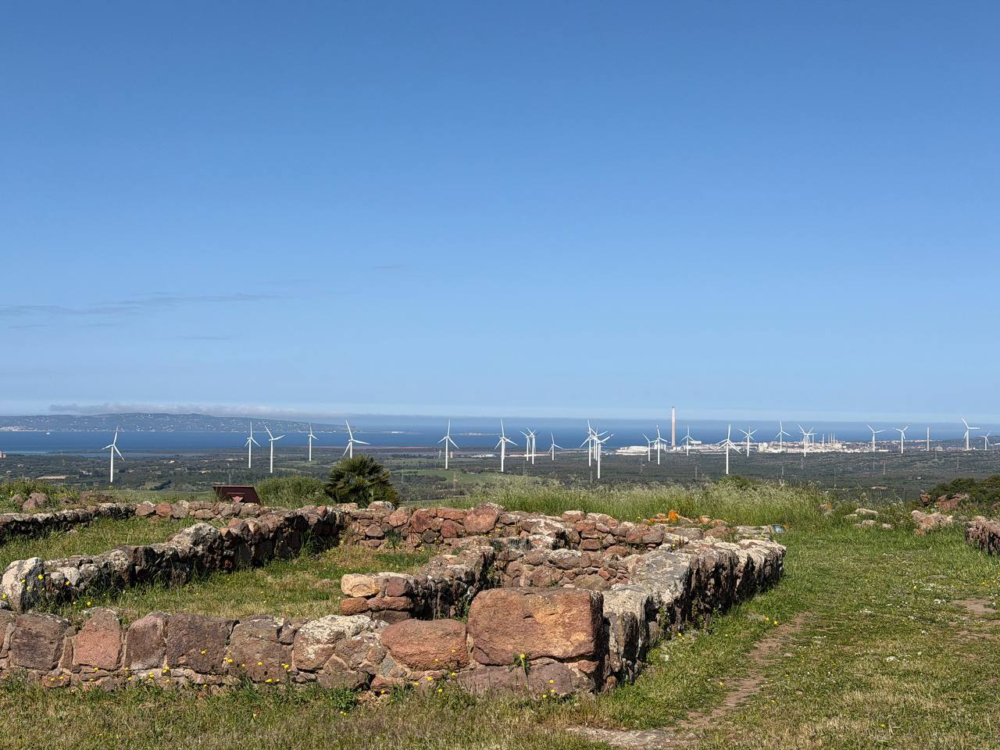
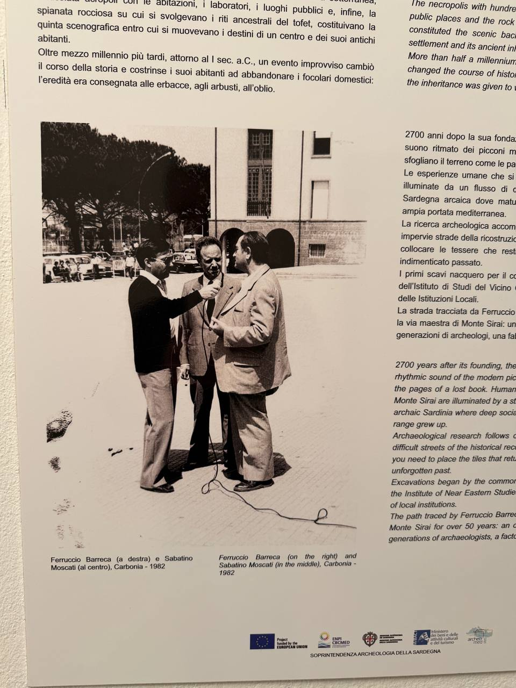
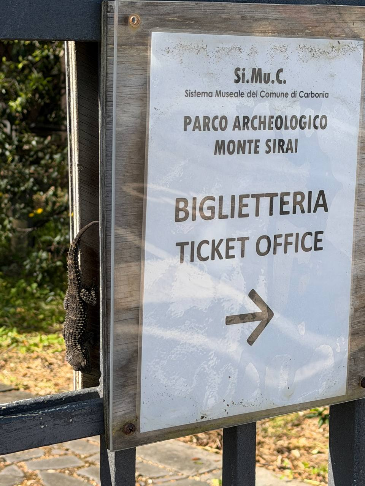

Partiamo da qui, perché è la foto che mette subito tono, persone e luce nella stessa frase. E già così siamo messi molto meglio di prima.
Stavolta la pagina usa soltanto queste ultime immagini. Niente accumulo, niente confusione: solo la selezione giusta per raccontare bene la giornata e mandarla a chi vuoi senza vergogna digitale.

Un set piccolo ma buono: persone, panorama, dettagli archeologici, la lucertola che pretende rispetto, un’inquadratura bella e un cartello finale che chiude il giro con dignità.







Adesso sì: selezione asciutta, leggibile, intenzionale. Una landing piccola, simpatica e finalmente sensata. Il resto, con affetto, l’abbiamo lasciato fuori.